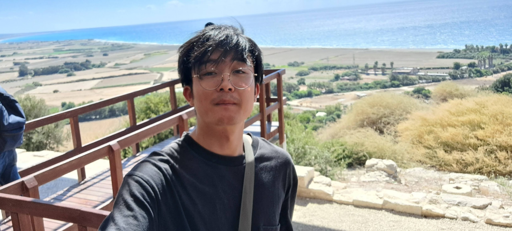
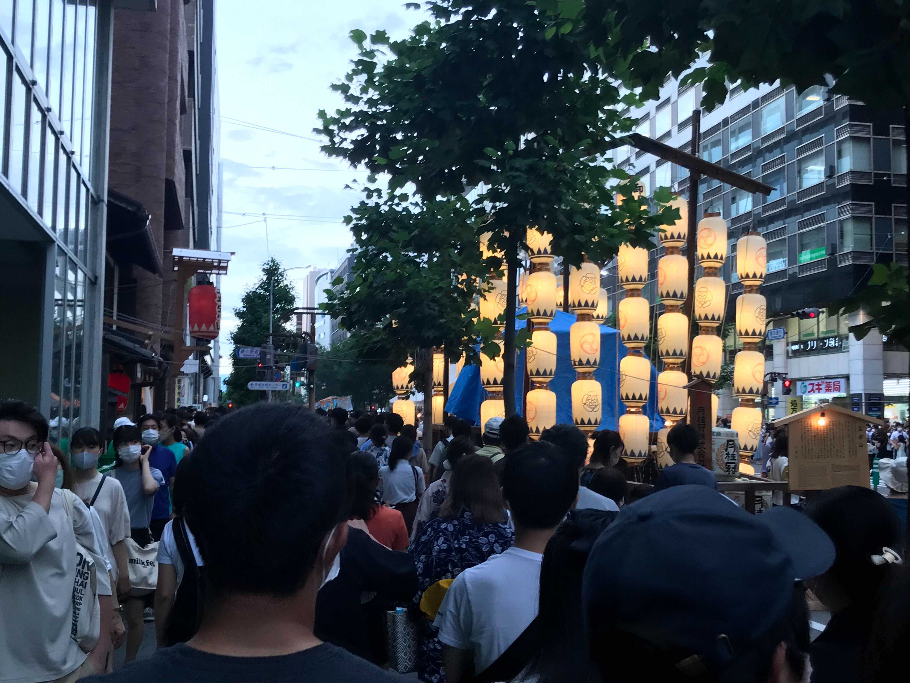

2022/10/28

こんにちは！今月の頭にキプロスに行っていたのでそのレポートです！
キプロスというのは，地中海に浮かぶ島で，サイズは肌感でいうと大体四国くらいです！なんでここ行ったの？っていうと，大学の用事で行くことになったからですね！8日間ほど滞在していました！
海と空は信じられないくらい青くって，ビュッフェのケーキにまでその青さは伝染していました．ケーキ青いって，日本やとあんまり想像つかないですよね笑 聞いた話，欧米人と日本人は目の構造が違うらしくって，だから食べ物のカラーリングも違うとのことでした．欧米人は色の違いが日本人ほどは認識できていないそうです．
KAN WA KYU DAI
そんなこんなで，楽しい8日間を過ごしていたわけです．また大学での諸々を頑張れば海外に行けるそうで，やる気がすごく高まりました．これからも精進したいと思います．では！バイバイ！
2022/10/22
おはこんにちばんは．今週は，5日間の比較的長めなインターンに参加してました．SIerの某企業で，プロジェクトの上流工程に5人チームで携わるのですが，これがたのしかった．．．班のメンバーがとにかく良かった．おかげさまで企業の志望度がだいぶ上がりましたね．
さて，上がったモチベーションを落とさないままに，勉強をしようと放置していたブログの更新，並びにスクリプトの刷新を決意．タイプスクリプトを勉強しながらwindowサイズに応じて画像をリサイズする機能を追加しました．パチパチ．インターンは上流工程ばかりで，これはこれで楽しかったのですが，下流工程には下流工程の楽しさがありますね．
さて，秋も深まり気温も下がってきている今日この頃ですが，風邪をひかないように，また，インターン先でであった正真正銘の陽キャさんに負けないように，気を張って今月も乗り切りたいと思っています．海苔切って乗り切るのがいいかなって思ってます．ガハハ．じゃあまた．
2022/10/13
そろそろタイプスクリプト勉強し始めようと思いました．まずは勉強がてら，本HPをタイプスクリプトで書いていきたいと思います．
2022/08/26
自転車漕いでたら，チェーンが切れました．チェーンが切れたためにペダルが急激に軽くなり盛大に転びました．後頭部めっちゃ強く打ってしまった．．．多分鞭打ちなってます．チェーンくんは，僕の脳みその価値を理解しとくべきですよね．死んでしまった脳細胞を供養．合掌．
転んだ直後に脳裏をよぎったのは，命があってよかったでも頭が痛いでもなく，鞄に入れたマックブックが大丈夫かということでした．情報科学学徒としての成長を感じられます．
坂を登っていたので，スピードがそこまで出ていなかったのが救いです．それでも20km/hくらいはあったと思いますが．なんにせよ，後続の車に跳ねられなくてよかったです．不幸中の幸いとはこのことでしょう．三途の川に小指の先ほどは入っていたと思います．命があってよかった．2年に1度くらい，命のありがたさに気づかされる経験してますね．もう懲り懲りです．
from チェーンを治すためにきたダイワサイクルより．
2022/08/18
ブログを書く暇もないくらい忙しかったわけで，更新できてませんでした．パスポート申請するにあたり市役所に来たら，思ったよりも繁盛してまして待ち時間ができたので筆を走らせている次第です．待ち時間しんどいなーと思ったんですが，そのおかげでブログを更新できているわけなので，ものは捉えようですね．
さて，なぜパスポートを取ることになったかというと，なんと私が第一著者の論文が国際会議に通り，国外に行くことになったからです．いい加減，日本は僕をとどめておくには小さすぎる国だなと思っていたので，もっとビックな大地に飛び立ちます．行き先はキプロスです．黒海に浮かぶ島ですね．日本の四国くらいのサイズです．全然日本より小さいですね．
2022/07/24
気づけば時刻は24時を回り，今日は日曜日です．日曜日といえば，朝というイメージがあります．共感覚でしょうか？僕だけでしょうか？
最近，有難いことに色々な方からWebアプリ作成のお話をいただき，日々自身のスキルが上がっていることを感じます．それと同時に，アプリ作るんじゃなくて就活しないとダメなんじゃない？という思いが脳裏をよぎります．
スキルが上がるのを感じると同時に，今の学習環境は効率があまりよろしくないんじゃないかと思い始めました．というのは，インプットがメインでアウトプットが少ないからです．人に教えるとなると，より深い理解が求められるので，自分の知見も一層深掘りされると思った次第です．
そこで，たまーにアプリで利用した技術とかをここで報告できたらいいなと思い始めました．今Spring BootやSQLやってるので，書き込むかもです．
今日の更新はいわば意思表明だったわけです．退路を断ち，前進あるのみ．人生にブレーキはいらない．ハンドルもいらない．必要なのは，そうアクセル．大丈夫．いつかたどり着く．だって，地球は，丸いんだから．----Y.Haruka
2022/07/16
ブログの開設から1ヶ月が経ちました．この一ヶ月は，なかなかしんどかったです．論文の締め切り，就活，クソアプリ開発．．．枚挙に遑がありません．
さて，本日7/16（土）は京都で祇園祭が執り行われているようで，そちらに参列してまいりました．人，人，人．コロナが流行ってからというもの，これほどの人混みを見たことがありませんでしたもので，なんだかキョロキョロしてしまいました．
東京都での感染者数が凄いようで，これを機に関西でも流行らないことを祈るばかりです．

2022/06/12
研究もひと段落して、時間に余裕ができたので自分のホームページ作ってみました。かねてからホームページというものが欲しかったのと、就活してたらHTMLやCSSといったフロントエンドの技術も結構評価されるようで、それらの一石二鳥を狙ってるわけです。
これからもっとリッチなデザインにしていけたらなと思ってます。